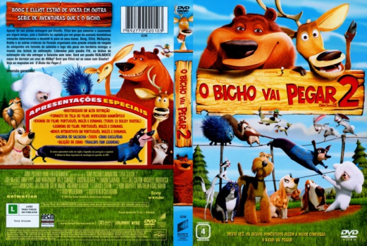

Outro Título:Open Season 2
País:United States, 76 minutos
Idiomas falados:Espanhol, Inglês, Português
Gênero(s):Aventura, Animação, Comédia, Família
Diretor(s):Matthew O'Callaghan
Escritor(es):David I. Stern
Codec:MPEG-2 (DVD)
Número: 5833


Certificado:L
Sinopse:
Animais se juntam para salvar o Sr. Weenie, sequestrado por um grupo de bichos domesticados que quer devolvê-lo aos antigos donos.
Elenco:


Tipo de mídia: DVD5,
Legendas: Espanhol, Inglês, Português, Sem Legendas
Alugado: Não
Tela: Anamorphic Widescreen